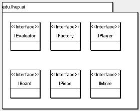

The Java programming language contains several object-oriented features that make it possible to build application frameworks based on interfaces. Interfaces make it easy to "plug-in" various implementations without making changes to the core of the framework. The following article demonstrates how to take advantage of Java interfaces by designing and implementing an application framework that supports game playing.
Perhaps the best object-oriented design advice is to "Program to an interface, not an implementation" [2]. When using interfaces, the actual implementation is not a factor in the design. As a result, the finished application has a much better chance of surviving the implementation changes it will inevitably be asked to support.
An interface can be defined as a contract that outlines the terms of use for a class of objects. When a class implements an interface, the class is agreeing to the contract outlined by the interface. In other words, the class is agreeing to provide the logic for all the methods listed in the interface. The single most important attribute of an interface is its implementation independence. The contract enforced by an interface does not make any assumptions about how the methods are implemented; the implementation strategy is left to the implementing class. By enforcing what a class of objects must do, without placing restrictions on how it is done, interfaces play a key role in making the behavior of objects more flexible.
The first step in the design process is discovering the necessary interfaces. A good way to start is to develop a rough sketch of the main program. After all, the main program should not change whenever an implementation is revised. A sketch of the main program for the game playing framework is shown in Listing 1.
IFactory factory = new Factory();
IBoard board = factory.getBoardInstance(args[0]);
boolean bContinue = true;
while (bContinue)
{
board.resetState();
System.out.println("\nStarting Board:\n" + board);
for (Iterator i = board.playerIterator(); i.hasNext(); )
{
IPlayer player = (IPlayer)i.next();
System.out.println(player + ": ");
player.takeTurn(board);
System.out.println("\n" + board);
}
if (board.getWinner() != null)
System.out.println("Winner: " + board.getWinner() + "!");
else
System.out.println("Tie!");
bContinue = playAgain();
}
|
| Listing 1: A rough sketch of the main program. |
The code in Listing 1 can play many different games, using a variety of strategies. However, the implementation details, such as the type of game, and the players that are playing, are not obvious from looking at the code. Hiding the implementation details was accomplished by representing the game, and the players involved, on an abstract level using interfaces.
In any object-oriented program, the only time a specific type needs to be revealed is during instantiation [1]. This property is exploited in Listing 1 by representing the current game using the IBoard interface. Observe how the type of game is "hidden" behind this interface and is determined by a "factory" responsible for creating the game. The factory is represented using the IFactory interface shown in Listing 2. As will be shown later, this is an example of the builder design pattern [2] because the factory constructs the board object out of other objects. The use of creational design patterns [2] is a key component to interface-based design because they make it so easy to change the concrete components used by an application.
public interface IFactory
{
public IBoard getBoardInstance(String strConfigFile);
}
|
| Listing 2: The IFactory interface. |
In addition to creating an abstraction for the type of game, it is also important to create an interface to represent the players. The interface will support the need to easily change a player's strategy. The type of players are hidden from the main program by way of the IPlayer interface. Instead of being directly involved in the creation of the players, the main program consults the board for the players, and the associated turn sequence. The players and the turn sequence is abstracted by taking advantage of the iterator design pattern. Iterators allow a sequence of objects to be enumerated without any knowledge of how these objects are contained, or the concrete type of objects being enumerated [2]. For example, the board object in Listing 1 provides the main program with a player iterator that makes it possible to enumerate the set of players. The responsibilities and behavior of any player that is capable of playing a game are summarized in the IPlayer interface (Listing 3).
public interface IPlayer
{
public String getDescription();
public String getShortDescription();
public void takeTurn(IBoard board);
public void setEvaluator(IEvaluator evaluator);
}
|
| Listing 3: The IPlayer interface. |
The two most important methods in the IPlayer interface are takeTurn() and setEvaluator(). The takeTurn() method asks a player to take a turn using the specified board. The player's setEvaluator() method accepts any object that supports the IEvaluator interface (Listing 4). The setEvaluator() makes it possible to configure any player with a specific, and more effective, strategy for evaluating the current state of the game board. The ability to change evaluation strategies is an example of the strategy design pattern [2] and is another example of how interfaces can increase flexibility.
|
public interface IEvaluator
{
public int evaluate(IBoard board, IPlayer player);
}
|
| Listing 4: The IEvaluator interface. |
Up to this point, the use of interfaces has helped create a main program that has no dependencies on the game it is playing, the type of players that are playing, or the strategies used by these players. For a better understanding of how this is possible, it will help to examine the IBoard interface (Listing 5).
public interface IBoard
{
public void pushMove(IMove move);
public IMove peekMove();
public IMove popMove();
public void setPlayers(IPlayer[] players);
public Iterator playerIterator();
public void moves(Collection col);
public IPlayer getWinner();
public void resetState();
}
|
| Listing 5: The IBoard interface. |
As shown in Listing 5, all boards contain a stack of moves. A turn can be taken by pushing a move onto this stack using the pushMove() method, and the most recent move can be obtained, or undone, using the peekMove() and popMove() methods. In addition to moves, each board must know the players that are permitted to make moves, and the order in which these players can take their turn. The IBoard interface provides this functionality with the setPlayers() and playerIterator() methods. When the game has ended, the getWinner() method can be used to obtain a reference to the winner of the game; null will be returned if the game ended in a tie. All boards must also provide a collection of the currently available moves using the moves() method. Finally, the resetState() method can be invoked to prepare the board for a new game. Without making any assumptions about a specific game type, the IBoard interface provides a working abstraction for many different types of games.
Since different games support different types of moves, the IMove interface is used to define these move types. In addition, an interface named IPiece is needed to represent the pieces associated with a move (Listing 6).
public interface IMove
{
public IPiece getPiece();
}
public interface IPiece
{
}
|
| Listing 6: The IMove and IPiece interfaces. |
A striking property of the IPiece interface is that it does not contain any methods. It may seem strange to define an interface without any methods, especially given the fact that most games can be implemented using pieces that require only the methods provided by Java's common base class: Object [5]. Although not immediately necessary, IPiece was created in order to keep with the spirit of programming to an interface. As a variety of games are implemented, this interface may prove to be more useful.
Figure 1 summarizes the edu.lhup.ai package, and the interfaces that have been uncovered in order to implement the generic game playing framework.
|  |
| Figure 1: The edu.lhup.ai package. |
Using the interfaces designed earlier, it is possible to implement players capable of playing a game with absolutely no detailed knowledge of the game they are playing. The players can play any game using only the abstract view provided by the IBoard interface. The two players that will be implemented here are the RandomPlayer, and the MinMaxAplhaBetaPlayer.
The RandomPlayer is capable of playing any game by selecting moves randomly. Naturally, this particular participant will not perform well at most games. However, it is capable of playing any game, and looking at its implementation does start to demonstrate the power of the current interface design. Since the RandomPlayer does not use any real strategy in order to choose its moves, it does not require an evaluator. As a result, the only method that needs to be implemented is takeTurn().
The RandomPlayer works with the current game using the IBoard interface (Listing 7). The use of the IBoard interface makes it possible to query the game for all of the possible moves. Once the player has a list of the possible moves, the player randomly selects a move from the available choices, and pushes the move onto the specified game's stack. No knowledge beyond the abstract representations of the game, and the allowed moves, is required in order to play a game in a random fashion.
public void takeTurn(IBoard board)
{
LinkedList moves = new LinkedList();
board.moves(moves);
int i = m_random.nextInt(moves.size());
board.pushMove((IMove)moves.get(i));
}
|
| Listing 7: The takeTurn method for the RandomPlayer. |
The random player is interesting but not that useful -- except for randomly testing new games. Perhaps it would be more useful to create a player that can play with more intelligence, and still have no knowledge of the game it is playing. To accomplish this, a little background in game theory is required.
In order to implement an intelligent player, a more sophisticated algorithm must be used. One possible solution is the minimax search algorithm. In its purest form, this algorithm plays the game from the current state to all possible endings by exploring the legal moves at each state. Upon reaching each end state, an evaluation is made on the quality of the result. Using this evaluation, each player's move leading up to the end state can be predicted -- assuming that the player will choose a move resulting in a higher evaluation. Employing this strategy, the best possible sequence of moves can be discovered, and the best next move determined. Readers that desire a more detailed description of the minimax search algorithm should refer to [4].
In a perfect world, the minimax search algorithm is very effective because it examines all possible moves in order to find the path that will lead to the best result. However, few games reside in a perfect world. The limitations of the basic minimax algorithm lie in the very large search space that must be examined, and most interesting games are interesting because they have such a large search space [4]. Fortunately, a minor modification can be made to the basic minimax algorithm that can decrease the number of moves evaluated. The technique used to prune a minimax search tree is called alpha-beta pruning [4].
MinMaxAlphaBetaPlayer
The MinMaxAlphaBetaPlayer uses a minimax search algorithm, along with alpha-beta pruning, in order to play a game. The most interesting thing about this implementation is that it does this without any knowledge of the specific game it is playing. Once again, the simple IBoard interface is all that is needed to implement this more sophisticated game player.
The implementation chosen for the MinMaxAlphaBetaPlayer is based on the pseudo code presented in [4]. Listing 8 shows the implementation of the takeTurn() method that performs the minimax search. This method queries the board for the current list of possible moves. It then examines each move and assigns it a rating. The move with the best rating is chosen as the next move.
public void takeTurn(IBoard board)
{
int bestRating = Integer.MIN_VALUE;
IMove bestMove = null;
List moves = new LinkedList();
board.moves(moves);
for (int i = 0; i < moves.size(); i++)
{
IMove move = (IMove)moves.get(i);
board.pushMove(move);
int currentRating =
getRating(board, 0, Integer.MIN_VALUE, Integer.MAX_VALUE);
board.popMove();
if (currentRating > bestRating)
{
bestMove = move;
bestRating = currentRating;
}
}
board.pushMove(bestMove);
}
|
| Listing 8: The takeTurn method for the MinMaxAlphaBetaPlayer. |
Most of the work done by the MinMaxAlphaBetaPlayer player takes place in the getRating() method. This method is called by takeTurn(), and recursively searches the tree of moves looking for an end state. An end state occurs when a cutoff limit is reached, the game ends in a tie, or one of the players wins. The cutoff limit is used for games which contain search spaces that are too large to be searched in their entirety. Once an end state is found, it is evaluated using the player's evaluator object.
The implementation for getRating() is not shown in order to avoid getting bogged down in the details of the algorithm (see the pseudo code presented in [4]). Instead, the reader is asked to focus on the following important points. First, the takeTurn() and the getRating() methods interact with the game using the IBoard interface. Using the IBoard interface is what makes it possible for the particular player to play any implementation of IBoard. Finally, rating each end state is performed by the player's evaluator and makes it possible to inject a problem-specific evaluation into the algorithm.
In an effort to keep the player completely general, a default evaluator that does not need game specific information is required. The default Evaluator class (Listing 9) can only evaluate terminal states, and assigns a rating of one for a victory, zero for a tie, and a minus one for states that result in defeat.
public class Evaluator implements IEvaluator
{
public int evaluate(IBoard board, IPlayer maxPlayer)
{
int rating = Integer.MIN_VALUE;
if (board.getWinner() == null)
{
rating = 0;
}
else if (board.getWinner() == maxPlayer)
{
rating = 1;
}
else
{
rating = -1;
}
return rating;
}
}
|
| Listing 9: The default Evaluator. |
As mentioned earlier, both of these implementations can be altered to create more effective players that take advantage of the details of a specific game. An actual game needs to be implemented in order to illustrate the creation of such specialized players.
edu.lhup.ai package, and support a variety of games. To put these classes to work, the game of tic-tac-toe was implemented.
In order to implement tic-tac-toe, the IBoard, IMove, and IPiece interfaces must be implemented. In addition, an iterator must be created that allows the enumeration of the tic-tac-toe players. These classes have been placed in the edu.lhup.ai.tictactoe package.
Tic-tac-toe requires three different types of pieces: XPiece, OPiece, and EmptyPiece. In addition, a Move class was created to associate a piece with a board location. The rules and logic of tic-tac-toe are implemented in the Board class and the PlayerIterator class.
The edu.lhup.ai.tictactoe package also contains a custom Evaluator that demonstrates how the generic MinMaxAlphaBetaPlayer can be improved by taking advantage of the rules of a specific game. If you recall, a cutoff point was added to the MinMaxAlphaBetaPlayer for the case when, even with alpha-beta pruning, a search takes too long. However, using a cutoff can lead to something called the horizon problem [4]. The horizon problem arises when the cutoff point is reached and the evaluator is asked to evaluate a game state that is not terminal. As a result, the evaluator must be capable of deciding how good a state is, even if there is currently no winner. Failure by the evaluator to see what is about to happen in the game can lead to a poor evaluation. Creating a custom evaluator is a good way to alleviate the horizon problem because additional logic can be added that uses knowledge of the game to look for trouble beyond the cutoff.
The tic-tac-toe specific evaluator examines terminal and non-terminal game states by judging how close a particular state is from victory or defeat; this can minimize the horizon problem. Players using this evaluator will be able to play tic-tac-toe much quicker because they can take advantage of a cutoff. The disadvantage is that players using this evaluator become tic-tac-toe specialists, and can no longer play a variety of different games.
Because the focus of this article is on the framework, and how it supports several different types of games, the actual tic-tac-toe classes are not covered in detail. A complete class diagram of all of the classes in the framework, along with the tic-tac-toe specific classes, is shown in Figure 2. For the purposes of testing the framework, the code from Listing 1 was used to create the PlayGame class.
|
|
| Figure 2: Framework class diagram. |
PlayGame class -- relies on the Factory class in order to get an instance of the current game board. The flexibility of the framework can be taken advantage of by placing the name of the actual game created by the Factory in an XML configuration file. The XML code is parsed using the classes in the javax.xml.parsers package [5]. The factory builds the game board using the class names located in the configuration file. Because the creation of the board is rather complex, consisting of building the board using players and evaluators, the builder design pattern was implemented [2]. The creation of classes, and instances of these classes, is accomplished by using Java's support for dynamic class loading [3].
An example of a configuration file that results in a game of tic-tac-toe between a RandomPlayer and a MinMaxAlphaBetaPlayer can be found in Listing 10.
<game> <gameFactory> <boardClass>edu.lhup.ai.tictactoe.Board</boardClass> <player> <playerClass>edu.lhup.ai.RandomPlayer</playerClass> </player> <player> <playerClass>edu.lhup.ai.MinMaxAlphaBetaPlayer</playerClass> <cutoff>1000</cutoff> <evaluator> <evaluatorClass>edu.lhup.ai.Evaluator</evaluatorClass> </evaluator> </player> </gameFactory> </game> |
| Listing 10: Tic-tac-toe configuration file. |
This configuration file makes it possible for new games and new players to be implemented, and plugged into the framework. Readers are encouraged to download the source code, implement a new game, and see how the default MinMaxAlphaBetaPlayer performs. It would also be a good exercise to create an even better player by implementing an evaluator that is specific to the new game, and plugging it into the MinMaxAlphaBetaPlayer.
Further extending of the framework could also be assigned in an undergraduate course in object-oriented programming or artificial intelligence, and competitions can be setup to assess the effectiveness of the student's work. The combination of game programming and good natured competition is often a strong motivation to undergraduate students, and should be more than enough to inspire lively participation. Interested students or instructors can obtain a digital copy of all of the source code, along with the Javadocs, at http://www.lhup.edu/mcohen/oogt.
The game playing framework described above demonstrates how the generous use of interfaces can lead to a flexible design. This flexibility is evident in the framework's ability to support many different games using a variety of game playing strategies. In addition, the framework can be customized to support game specific strategies. Most importantly, this customization can be done via a configuration file, and imposes minimal impact on the existing code base. Identifying the interfaces required by an application, and then programming to these interfaces, results in an application that happily accepts implementation changes. Instructors and students alike are encouraged to take advantage of the flexibility of the framework to help with the education of object-oriented programming and game theory.
Mark Cohen (mcohen@lhup.edu) is an instructor in the Business Administration, Computer Science and Information Technology department at Lock Haven University, and a graduate student associated with the Applied Cognitive Science Lab in the School of Information Sciences and Technology at Pennsylvania State University. His research interests include object-oriented programming and artificial intelligence. He received a M.S. in Computer Science from Drexel University, a B.S. in Electrical Engineering from Lafayette College, and has over 10 years of experience developing software for the health care and pharmaceutical industries.